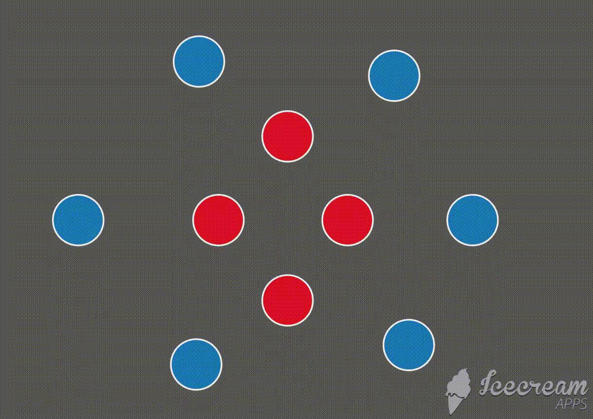
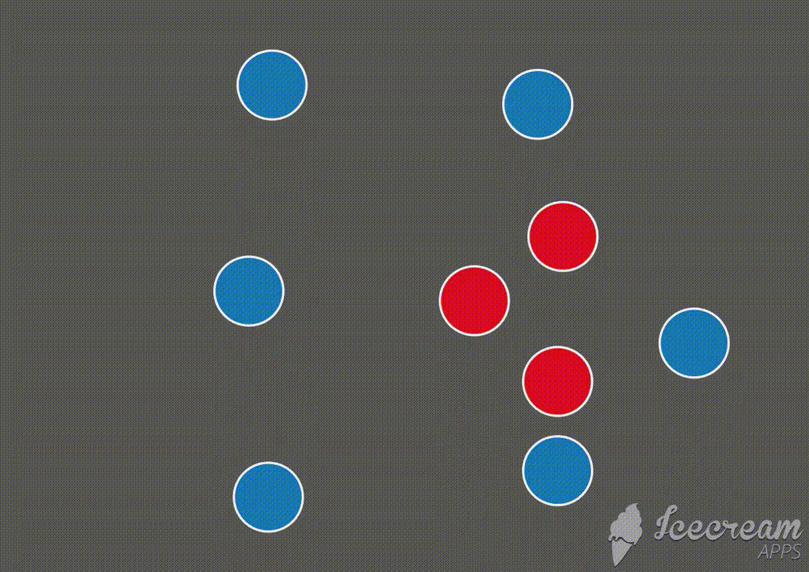

What is gerrymandering and how does it affect me? Before answering that, let's define redistribution. Redistribution involves adding, removing, or changing political boundaries in response to population changes (Source). In 1965, the united States Congress passed the Voting Rights Act,establishing a set of standards of redistribution and redistricting, including redrawing districts of roughly equal population upon completion of the decennial Census. Under the Reserved Powers clause in the Constitution, The United States reserves the power to redistrict to each state. States either task the State Legislature to redistrict with gubernatorial approval, a bipartisan redisticting comission, or independent bodies to redistrict while reserving the power to approve or veto the plans to the State Legislature (Source). Despite rigorous standards, gerrymandering, the practice of manipulation the shapes of political districts to gain or maintain power in favor of a party or group, occurs. Gerrymandering occurs in many U.S. states and produces some unusually shaped districts, such as District 12 in North Carolina and District 3 in Maryland (see maps below). Gerrymandering can affect individual voters because the politicians who draw the lines study historical voting results and trends to hand pick which geographic areas vote for them. On one hand, gerrymandering can tilt the results of an election in one party's favor that did not deserve it. On the other hand, gerrymandering can ensure that each party occupies the number of seats proportional with the proportion of votes they receive on a statewide level. Gerrymandering is executed in different ways. Two common methods are found below. Please scroll down or left click a state's button at the top as many times as needed to jump to a map.
 In the first example, the red party gains an additional seat. In the second example, the blue party wins every seat.
For the maps below, five states with unusual district shapes were selected. The four buttons on the top of the map panes represent the year of the district shapes. Click each year's button to view the change in shape over time. Some of the unusual districts were gerrymandered and may have changed party as a result. The blue states were represented by a Democrat and red states were represented by a Republican in the U.S. House of Representatives. Click on a district to see its district number.
Created by Jackson Myatt, 2021